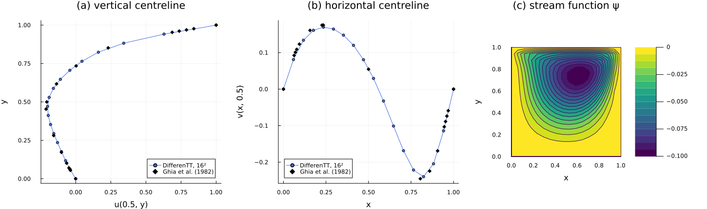

Lid-driven cavity
In two dimensions, the incompressibility constraint can be built into the unknowns instead of being enforced by a projection. Writing the velocity as $\mathbf{u} = (\partial_y \psi, -\partial_x \psi)$ for a stream function $\psi$ makes it divergence-free for any $\psi$, and taking the curl of the momentum equation eliminates the pressure. What remains is the vorticity–streamfunction formulation,
\[\partial_t \omega + (\mathbf{u} \cdot \nabla)\omega = \frac{1}{Re} \Delta \omega, \qquad -\Delta \psi = \omega,\]
where $\omega = \partial_x v - \partial_y u$ is the vorticity. Every time step solves one Poisson equation, now for $\psi$, and advances $\omega$ explicitly. The price of eliminating the pressure is paid at the walls: the no-slip condition fixes two conditions on $\psi$ (its value and its normal derivative) and none on $\omega$, so the wall vorticity has to be recovered from $\psi$ near the wall. In the QTT format, this scheme was introduced by Kiffner & Jaksch, Tensor network reduced order models for wall-bounded flows (2023), whose wall treatment we follow.
The guiding idea of this tutorial is to test the whole scheme on the classical benchmark of the lid-driven cavity, a unit square whose top wall slides at unit speed, against the steady solution of Ghia, Ghia & Shin (1982) at $Re = 100$. We set up the faces and the grid, choose the time step from the CFL condition, run the evolution until the flow is steady, and compare the velocity along the two centrelines with the tabulated values. The boundary treatment itself, the ghost nodes and the wall vorticity formulas, is derived step by step in the boundary-condition tutorial on the vorticity–streamfunction formulation.
using DifferenTT
using ITensors, ITensorMPS
using LinearAlgebra
using Plots
using Printf
using Random
ITensors.disable_warn_order()Faces and grid
The boundary of the cavity is described by its faces, one pair per axis: cavity_faces returns four NoSlipWalls with $\psi = 0$, the top one moving in $+x$ with the given velocity. The boundary conditions that both fields must carry follow from the faces (vorticity_boundary_conditions): a homogeneous DirichletBC on every wall, since every wall is a ghost face, whose values the scheme supplies.
faces = cavity_faces(1.0)
bcs = vorticity_boundary_conditions(faces)BoundaryConditions{2, BoundaryCond1d{DirichletBC{Float64}, DirichletBC{Float64}}}((BoundaryCond1d{DirichletBC{Float64}, DirichletBC{Float64}}(DirichletBC{Float64}(0.0), DirichletBC{Float64}(0.0)), BoundaryCond1d{DirichletBC{Float64}, DirichletBC{Float64}}(DirichletBC{Float64}(0.0), DirichletBC{Float64}(0.0))))The walls are ghost nodes, so the $n = 2^4 = 16$ stored nodes of each axis are interior nodes, at the physical coordinates $k h$, $k = 1, \dots, n$, with $h = 1/(n + 1)$. vorticity_grid builds this grid from the faces, and also sets the periodic flag of every axis whose faces are periodic, which here is none.
nodes = (4, 4)
arch = QTTArchitecture(nodes; interleaved=false)
sites = siteinds(arch)
grid = vorticity_grid(arch, (1.0, 1.0), faces)
h = grid.dx[1]
grid.dx, grid.periodic((0.058823529411764705, 0.058823529411764705), (false, false))The experiment
An INSVorticityExperiment holds the grid, the vorticity and the stream function, the Reynolds number, the faces, the wall vorticity formula and the truncation of the TT arithmetic of the evolution. The fluid starts at rest, $\omega = 0$, with the lid impulsively started. We use Jensen's second-order wall vorticity formula (the default), which recovers the wall vorticity from the stream function at the first two nodes away from the wall (wall_vorticity_coefficients). The formulation only supports second-order stencils ($q = 2$), since the wall formulas and the ghost faces reach one node beyond the grid; the first-order accuracy of the Dirichlet closure of the eighth-order stencils (see DirichletBC) therefore does not arise here. At $Re = 100$ the Kolmogorov scale $Re^{-3/4} \approx 0.032$ is below $h \approx 0.059$, of which the constructor warns; a $2^5 \times 2^5$ grid would resolve it.
experiment = INSVorticityExperiment(
grid,
ScalarField(zeros_mps(sites), arch, bcs),
ScalarField(sites, arch, bcs),
100,
faces;
stencil_order=2,
maxdim=64,
cutoff=1e-12,
);┌ Warning: Spacing in the 1-th dimension does not resolve to Kolmogorov scale dx = 0.058823529411764705 > Re^-(3/4) = 0.03162277660168379
└ @ DifferenTT ~/work/DifferenTT.jl/DifferenTT.jl/src/Physics/NavierStokes/insexperiment.jl:266
┌ Warning: Spacing in the 2-th dimension does not resolve to Kolmogorov scale dx = 0.058823529411764705 > Re^-(3/4) = 0.03162277660168379
└ @ DifferenTT ~/work/DifferenTT.jl/DifferenTT.jl/src/Physics/NavierStokes/insexperiment.jl:266The vorticity is advanced with the fourth-order Runge–Kutta scheme (RK4), whose time step must keep $dt\,\lambda$ in its stability region for every eigenvalue of the linearized transport. The central advection has imaginary eigenvalues, bounded by $\lambda_{\text{adv}}$, and the diffusion negative real ones, bounded by $\lambda_{\text{diff}}$ (cfl_spectral_radii, with the lid speed as the characteristic velocity), and RK4 is stable for $dt \le 2\sqrt{2}/\lambda_{\text{adv}}$ and $dt \le 2.785/\lambda_{\text{diff}}$ (check_cfl):
λ_adv, λ_diff = DifferenTT.cfl_spectral_radii(experiment; vmax=experiment.vmax)
@printf("dt ≤ %.4f (advection), dt ≤ %.4f (diffusion)\n", 2√2 / λ_adv, 2.785 / λ_diff)dt ≤ 0.0832 (advection), dt ≤ 0.1205 (diffusion)We take $dt = 0.07$, below both limits, and 200 steps, up to $t = 14$.
dt, nsteps = 0.07, 200
stepper = RK4(; time_evol_kwargs=TimeEvolArgs(0.0, dt * nsteps, nsteps), cutoff=1e-12, maxdim=64)RK4{@NamedTuple{cutoff::Float64, maxdim::Int64}}(TimeEvolArgs(0.0, 14.000000000000002, 0.07, 200), (cutoff = 1.0e-12, maxdim = 64))The evolution
Each step of vorticity_evolve! solves the Poisson equation $-\Delta \psi = \omega$ for the current vorticity, starting from the stream function of the previous step, and then advances the vorticity over $dt$ with the velocity and the wall vorticity of that stream function. The operator of the Poisson equation is SPD and does not change between steps, as in the Chorin projection of the previous tutorial. We solve it with MALS (ResidualALS) to a relative residual of $10^{-8}$, tighter than in the benchmarks of the paper, since we want to compare a steady solution with reference values. With save_every = 50, the experiment stores the initial state and the steps 50, 100, 150 and 200; for each stored step, it keeps the vorticity at its end and the stream function solved at its start. The predictor draws the random sketches of its element-wise products from the global random number generator, which we seed.
solver = ResidualALS(;
sweep_kwargs=SweepingArgs(; nsweeps=20, maxdim=64, cutoff=0.0, (observer!)=ResidualObserver(; rtol=1e-8)),
updater_kwargs=LocalUpdaterArgs(; ishermitian=true, isposdef=true, rtol=1e-10, krylovdim=1, maxiter=2000),
residual_tol=1e-9,
)
Random.seed!(1)
elapsed = @elapsed vorticity_evolve!(experiment, solver, stepper, 50)
@printf(
"%d steps in %.1f s, χ(ω) = %d, χ(ψ) = %d\n",
nsteps,
elapsed,
maxlinkdim(last(experiment.omega_field)),
maxlinkdim(last(experiment.psi_field))
)┌ Info: CFL condition satisfied
│ dt = 0.07
└ dt_max = 0.0831890330807703
200 steps in 40.9 s, χ(ω) = 12, χ(ψ) = 15Centreline velocities
The velocity follows from the stream function by central differences (streamfunction_velocity, which needs the operators of a VorticityCache). With four walls at $\psi = 0$, the discrete velocity is exactly divergence-free, since the difference operators of the two axes commute. We sample it densely with contract_mps, whose site 1 is the most significant index, so that the reshaped array has $y$ along its rows and $x$ along its columns.
The centrelines $x = 0.5$ and $y = 0.5$ lie halfway between the nodes $n/2$ and $n/2 + 1$, so we average those two columns or rows, and complete the profiles with the wall values: $u = 1$ on the lid and zero elsewhere. We then interpolate them linearly at the points of Tables I and II of Ghia, Ghia & Shin (1982), whose $Re = 100$ columns we copy below, and measure the root-mean-square difference over the interior points.
ghia_y = [
1.0,
0.9766,
0.9688,
0.9609,
0.9531,
0.8516,
0.7344,
0.6172,
0.5,
0.4531,
0.2813,
0.1719,
0.1016,
0.0703,
0.0625,
0.0547,
0.0,
]
ghia_u = [
1.0,
0.84123,
0.78871,
0.73722,
0.68717,
0.23151,
0.00332,
-0.13641,
-0.20581,
-0.2109,
-0.15662,
-0.1015,
-0.06434,
-0.04775,
-0.04192,
-0.03717,
0.0,
]
ghia_x = [
1.0,
0.9688,
0.9609,
0.9531,
0.9453,
0.9063,
0.8594,
0.8047,
0.5,
0.2344,
0.2266,
0.1563,
0.0938,
0.0781,
0.0703,
0.0625,
0.0,
]
ghia_v = [
0.0,
-0.05906,
-0.07391,
-0.08864,
-0.10313,
-0.16914,
-0.22445,
-0.24533,
0.05454,
0.17527,
0.17507,
0.16077,
0.12317,
0.1089,
0.10091,
0.09233,
0.0,
]
function interpolate(xs, ys, x)
k = clamp(searchsortedlast(xs, x), 1, length(xs) - 1)
w = (x - xs[k]) / (xs[k+1] - xs[k])
return (1 - w) * ys[k] + w * ys[k+1]
end
rms(a, b) = sqrt(sum(abs2, a - b) / length(a))
cache = VorticityCache(experiment)
n = 2^nodes[1]
coordinates = [0.0; h .* (1:n); 1.0]
function centrelines(ψ)
u, v = streamfunction_velocity(cache, ψ)
U, V = reshape(contract_mps(u), n, n), reshape(contract_mps(v), n, n)
u_centre = [0.0; (U[:, n÷2] + U[:, n÷2+1]) / 2; 1.0]
v_centre = [0.0; (V[n÷2, :] + V[n÷2+1, :]) / 2; 0.0]
return u_centre, v_centre
end
interior = 2:(length(ghia_y)-1)
for k in eachindex(experiment.psi_field.u)
u_centre, v_centre = centrelines(experiment.psi_field[k])
@printf(
"step %3d (t = %5.2f): rms(u - Ghia) = %.4f, rms(v - Ghia) = %.4f\n",
50k,
(50k - 1) * dt,
rms(interpolate.(Ref(coordinates), Ref(u_centre), ghia_y[interior]), ghia_u[interior]),
rms(interpolate.(Ref(coordinates), Ref(v_centre), ghia_x[interior]), ghia_v[interior])
)
endstep 50 (t = 3.43): rms(u - Ghia) = 0.0213, rms(v - Ghia) = 0.0295
step 100 (t = 6.93): rms(u - Ghia) = 0.0101, rms(v - Ghia) = 0.0104
step 150 (t = 10.43): rms(u - Ghia) = 0.0099, rms(v - Ghia) = 0.0074
step 200 (t = 13.93): rms(u - Ghia) = 0.0100, rms(v - Ghia) = 0.0070The differences fall as the flow develops and settle from $t \approx 10$ on, at about $10^{-2}$ for $u$ and $7 \cdot 10^{-3}$ for $v$, which then change by less than $10^{-3}$. They are therefore set by the resolution of the $2^4 \times 2^4$ grid, not by the length of the run: with the same script on $2^5 \times 2^5$ nodes and $dt = 0.028$, which costs about four times as much, both differences drop to about $3 \cdot 10^{-3}$ at $t \approx 8.4$. At this size the agreement is only qualitative for the details, such as the strong gradient below the lid, but the profiles already reproduce the shape and the extrema of the reference solution.
The same scheme also reproduces the harder case of the original benchmark, given enough resolution. The experiment experiments/inse/liddriven_cavity runs it at $Re = 1000$ on $2^7 \times 2^7$ interior nodes for 8000 steps; with the code of the paper-ttfai-data tag, its centrelines differed from the $Re = 1000$ columns of Ghia et al. by an rms of $5.4 \cdot 10^{-3}$, and its primary vortex had $\psi_{\min} = -0.1173$ against their $-0.1179$.
Summary
The figure shows the horizontal velocity along the vertical centreline (a) and the vertical velocity along the horizontal centreline (b) of the last stored state, against the values of Ghia, Ghia & Shin (1982), and (c) the stream function, whose minimum marks the primary vortex, completed with its wall value $\psi = 0$.
u_centre, v_centre = centrelines(last(experiment.psi_field))
panel_a = plot(; xlabel="u(0.5, y)", ylabel="y", title="(a) vertical centreline", legend=:bottomright)
plot!(panel_a, u_centre, coordinates; label="DifferenTT, 16²", marker=:circle, markersize=3, color=:royalblue)
scatter!(panel_a, ghia_u, ghia_y; label="Ghia et al. (1982)", marker=:diamond, color=:black)
panel_b = plot(; xlabel="x", ylabel="v(x, 0.5)", title="(b) horizontal centreline", legend=:bottomleft)
plot!(panel_b, coordinates, v_centre; label="DifferenTT, 16²", marker=:circle, markersize=3, color=:royalblue)
scatter!(panel_b, ghia_x, ghia_v; label="Ghia et al. (1982)", marker=:diamond, color=:black)
Ψ = zeros(n + 2, n + 2)
Ψ[2:(end-1), 2:(end-1)] = reshape(contract_mps(last(experiment.psi_field)), n, n)
panel_c = contourf(
coordinates,
coordinates,
Ψ;
levels=15,
aspect_ratio=:equal,
xlims=(0, 1),
ylims=(0, 1),
xlabel="x",
ylabel="y",
title="(c) stream function ψ",
color=:viridis,
)
plot(panel_a, panel_b, panel_c; layout=(1, 3), size=(1450, 430), margin=6Plots.mm)